UCLA coursework, 2014 to 2018
Mendocino Fire Complex: Calculating Surface Vegetation Fluctuations through Spectral Indices (NDVI & NBR)

Abstract:
This research delves into the complexities associated with measuring fire’s impact on an ecosystem, through the scope of vegetation health and re-growth. Change-detection mapping allows for an analysis of time variation to come to surface — an opportunity that provides a multi-faceted observation for comprehending the intricacies of disturbance patterns. In situ observations are a large aspect in the calculation of vegetation change post-fire; however, the application of various remote sensing techniques permits a less constricted, more versatile manifestation of methods for detecting (and understanding) complications associated with disturbance patterns.
The flexibility associated with remote sensing techniques - specifically through the lens of vegetation alteration post-fire - is perceptible through two essential applications: The ability to obtain, calculate, and analyze data that transverses both a wide timespan, and/or span distances not feasible for direct analysis of study sites. This study explores fluctuations in the condition of surface vegetation, the Normalized Difference Vegetation Index (NDVI), of Mendocino County and the Mendocino National Forest before, during, and after the emersion of the Mendocino Fire Complex. Landsat 8 OLI/TIRS C1 Level-1 imagery was amassed, and several composites were produced to analyze NDVI values spanning the time before and after the Mendocino Fire Complex.
In addition, this research uses satellite data to classify the fire severity of the burned areas in Mendocino County and the Mendocino National Forest. Fire severity was calculated through the spectral index of the Normalized Burn Ratio (NBR), which utilizes reflectance data directly before and shortly after the emergence of a fire. Pre-Processing steps were ensured - like creating water masks and radiometric calibrations - to limit the amount of interference. Highlighting the burned area of the Mendocino Complex and estimating overall burned severity was more complicated than its NDVI counterpart. Two approaches were taken - ENVI and Google Earth Engine (UN-SPIDER). Both procedures are described in full below; however, once a comparison of data values became palpable, the results derived through Google Earth Engine were selected for representation.
Introduction:
The Mendocino Fire Complex emerged from two fires near Mendocino County, the River Fire and the Ranch Fire, and coined the title of California’s largest wildfire in state history (2018) by devouring roughly 450,000 acres. These twin flames destroyed upwards of 280 edifices, an estimated 160 being homes, and charred an extent larger than Los Angeles. The Mendocino Fire Complex (here on denoted as ‘Complex’), surfaced on July 27th, 2018 at 12:05PM, and lasted for months until its containment on October 4th, 2018 at 10:10AM. The continuation of the Complex is most likely attributed to California’s Mediterranean climate; the state’s triple digit temperature average in the month of August cultivates the necessary conditions for a heat wave to persist and allow the commencement of wildfires. This fact, coupled with the knowledge of high winds’ capability of propelling increased amounts of timber and dry vegetation, alludes to the multi-directional dispersion of the Complex. The Complex’s shift towards the USFS Mendocino National Forest is of prime examination in this report — an emphasis that underscores the dangers and necessities of fire in an ecosystem teeming with diverse biogeographic and physiographic qualities, and exemplifies the impact of the Complex on a region formerly characterized as having substantially high NDVI surface values.
California’s dry summers are kindled by two factors: Cold ocean currents, and a strong diurnal character to daily temperatures. Cold ocean currents are the initial force held accountable for the dry weather experienced during California’s summers — this high-pressure system hinders the ability of cloud formation and resulting rainfall. The amplification of sunlight during this season intensifies the degree of heating during the day, coupled with increased rates of cooling during the night, manifests a strong diurnal character to daily temperatures that ensures the requirements necessary for a certain degree of dryness to persist. This absence of precipitation can linger anywhere between the duration of three to six months. The retreatment of cold ocean currents during the winter, allows for warm oceanic water to amass near the shoreline. This increased rate of warm water creates the required conditions for precipitation; as hot air continues to rise in the atmosphere, it begins to expand and consequently cool. When the air molecules begin to cool, relative humidity intensifies and causes the water particles to condense. The result is increased cloud formation and likewise increased precipitation rates.
Temperatures in regions scattered throughout the state of California are greatly influenced by the distance from large bodies of water. However, due to the relative closeness of most areas near these large bodies of water, the temperature ranges of a Mediterranean climate are moderate; the range in temperature amid the winter season’s high and the summer season’s low is miniscule. The greatest impact on the summer’s daily range of amplified temperature values is the exaggeration of the season’s dry, cloud-free settings. Factors such as latitude and elevation play an essential role in the summer season’s temperature range from mild to very hot, but generally the farther an area is from a large body of water, the higher the range in temperature. Regions of greater distance from larger bodies of water are at a greater risk of wildfire development during the summer season, as intensified winds stemming from the inland, arid regions enhance average temperature values.
In 2018, the state of California experienced a substantial duration of drier than average temperature conditions. The region’s most at-risk of increased wildfire emergence were constricted between Southern and Central California, where reports of a 25% decrease in monthly precipitation values were deduced. Values of peak dryness were actualized in the mid-months of California, which established the preliminary conditions necessary for wildfire occurrence. The state’s long-lasting drought ensued throughout November, with rates intensifying throughout the Mendocino National Forest. This accentuation of increasing temperature values and declining precipitation values throughout the Mendocino National Forest is of prime importance for this study, which investigates the changes in surface vegetation after the Mendocino Fire Complex.
Forests are one of the world’s most complex and comprehensive ecosystems, able to prosper globally in varying degrees of weather and states of existence, and home to countless species and priceless resources. While forests account for a marginal amount of the Earth’s total surface (14%), when paired with savannahs they comprise the highest quantities of organic material compared to any other global ecosystem, and are responsible for upwards of 40% of total solar energy absorbed each year by green vegetation. Forests are associated with having the highest rates of biodiversity throughout all terrestrial ecosystems, meaning the largest quantities of biological resources, and thus are instrumental in sustaining the Earth’s ecological balance. The warm summers in California place forests in a precarious situation when balancing the importance and risk associated with wildfires in an ecosystem of global importance. This study monitors the fluctuations in NDVI values across the Mendocino National Forest before and after the largest forest disturbance in state history, in an attempt to better understand land ecosystem patterns of regeneration.
While this research is focused on the local lens of the Mendocino National Forest, it is important to mention the influence of largescale forest disturbances on a regional and global level. Forest disturbance (and likewise forest regeneration) is a crucial factor in the transfer of carbon between the atmosphere and the surface. Moreover, these disturbances are responsible for altering the landscape of a forest, manipulating the degrees of energy associated with the ecosystem’s biogeochemical cycle, as well as establishing the biological and physical characteristics behind a forest’s overall makeup.
The Mendocino National Forest promotes roughly 2.6 million acre-feet of water per year, equivalent to about 847 billion gallons per year. This is especially prevalent due to the increased propensity of California with drought-likeliness, as mentioned prior with intensified temperatures during the summer season. This National Forest has a radius of 233,704 acres of wilderness, and stores upwards of 168.5 million metric tons (mmt) of Carbon Dioxide in its soil. The objective of this project is to determine how the Mendocino National Forest — and surrounding areas of direct impact — surface vegetation is influenced by the Mendocino Fire Complex. This study accentuates the importance of recognizing temporal and spatial trends (and anomalies) in the supervision of forest health, by monitoring the occurrence and distribution of a forest fire disturbance within the Mendocino National Forest. Ultimately, this research denotes the importance of observing changes in vegetation after forest disturbances such as wildfires, through the underlying message of implementing more advanced management strategies and tools of observation to mitigate future damages.
Although preceding studies on vegetation monitoring after a forest disturbance rely heavily on data observed from in situ observations, W. Chen et al. showcases the ability and assurance of observing vegetation changes through the lens of remotely sensed data. The utilization of remote sensing in their study underscores the ineffectiveness and costliness of a not-always-standardized ground survey. W. Chen et al. holds that there is an increased necessity for remotely sensed estimates of burned forest areas, especially if forest management and assessment is to be advanced in future studies. Countless studies on forest disturbance mapping methods indicate that remote sensing is the most effective technique of regularly monitoring forest dynamics at large scales. Satellite remote sensing represents a cost-friendly alternative for forest change monitoring in areas of great expanses.
Data provided by remote sensing techniques has offered a multifaceted approach at mapping the various sizes of forest disturbances from wildfires, such as varying algorithms of supervised and unsupervised classification. However, this study uses threshold segmentation based on single-band reflectance of an essential vegetation index, the Normalized Difference Vegetation Index (NDVI), to precisely abstract data on the burned area of the Mendocino National Forest and its surrounding boundaries. This analysis is provided from Landsat 8 OLI/TIRS C1 Level-1 imagery. Similar to the results of W. Chen et al., this study found that a forest’s most densely vegetated areas experienced the largest decrease in NDVI values.
For comparison in aptitude of measurement and a dual understanding of differing methods utilized to calculate a forest disturbance’s impact on surface vegetation, fire severity was calculated through the spectral index of the Normalized Burn Ratio (NBR). NBR utilizes reflectance data directly before and shortly after the emergence of a fire. Fire severity is calculated remotely using spectral indices of single-date and multitemporal index data [6] — [12]. NBR is is calculated by obtaining the difference between near-infrared (NIR) and short-wave infrared (SWIR) reflectance, divided by their sum.
Methods:
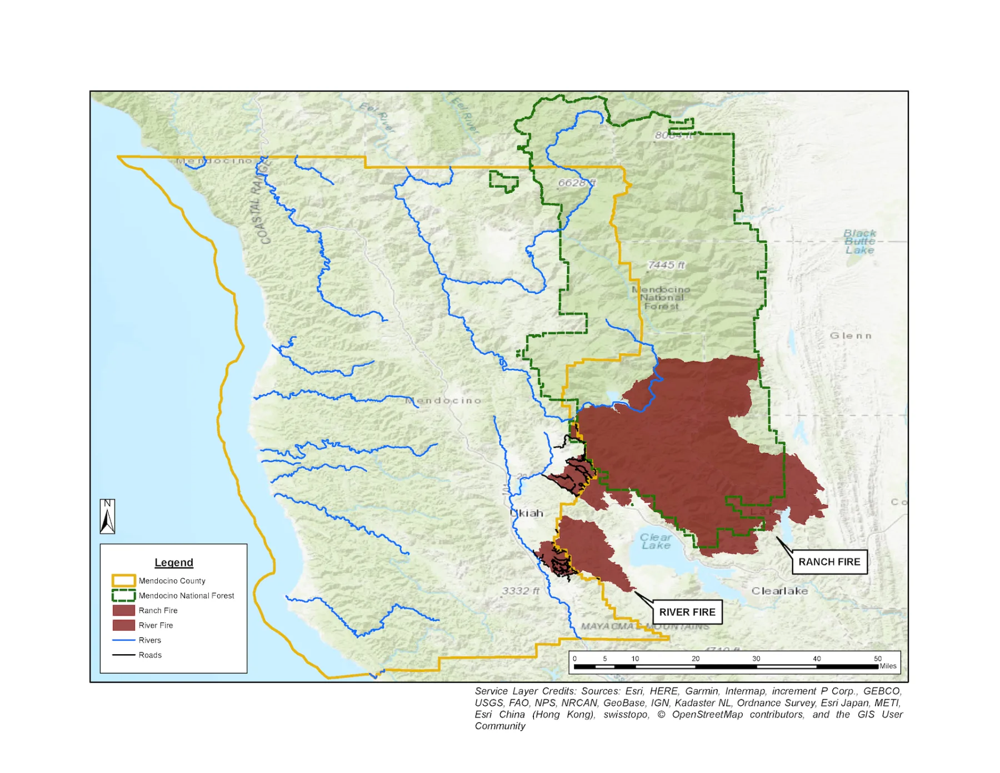
This reference map of the Mendocino National Forest and the Mendocino Fire Complex was created entirely in ArcGIS. Shapefiles containing the perimeters of the Mendocino Fire Complex’s two fires were downloaded from the Geospatial Multi-Agency Coordination (GeoMac), powered by USGS. Shapefiles containing the boundaries of Mendocino County and Mendocino National Forest were also downloaded. The Mendocino County shapefile was provided by the US Census Burau – 2018 TIGER/Line, and the Mendocino County shapefile was provided by the USDA Forest Service. Some of the rivers and roads within Mendocino County fell within the boundaries of the burned areas; to reduce the visual impact on mapping the burned regions of Mendocino County and Mendocino National Forest, the rivers and roads intersecting the burned areas were extracted and then masked.
NDVI Data Acquisition and Statistical Analysis: Due to the Mendocino Fire Complex’s prolonged duration of commencement - July 27th to October 4th - two Landsat TM images were obtained before the fire emerged and after the fire was extinguished (path 45 row 33: July 10; path 45 row 32: July 10; path 45 row 32: October 30; path 45 row 33: October 30). These Landsat images were provided by United States Geological Survey Earth Explorer, and were determined to be the best representation of satellite images for calculating NDVI values based on area covered and lack of cloud interference. The composites acquired from USGS Earth Explorer contain a spatial resolution of 250 meters.
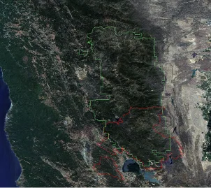
Above is the Landsat imagery obtained before the Mendocino Fire Complex, with emphasis on the Mendocino National Forest (July 10, 2017).
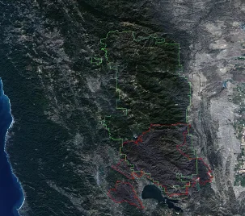
Above is the Landsat imagery obtained after the Mendocino Fire Complex, with the same scale for reference (October 30, 2017). An apparent decrease in vegetation is realized.
Vegetation Indices are groupings of single bands captured by a remote sensing image, and generally associated with the effectiveness of characterizing the status of surface vegetation. Normalized Difference Vegetation Index (NDVI) captures one of the most wide-ranging illustration of surface conditions, due to its combination of normalized difference formula and use of regions of chlorophyll that exhibit the highest rates of reflectance and absorption. NDVI is generalized as the most frequently used vegetation index for characterizing vegetation conditions, because it uses countless bands of remotely sensed data. This Multi-Spectral Remote Sensing data technique helps to accurately define the classification of differing land covers, such as bodies of water or types of vegetation on a given surface.
NDVI values are defined using the following equation: NDVI = (NIR - RED) / (NIR + RED)
NIR and RED denote the reflectance of the near-infrared and red bands, correspondingly. NDVI values fall between a range of -1 to 1. The wavelength range for the red band (RED) is between 600nm - 700nm; the wavelength range for the near-infrared band (NIR) is between 750nm - 1300nm; the wavelength for the green band is 550nm. These values are likewise classified into differentiating surface types. For instance, values of 0.1 or below represent sand particles or barren rock, while values ranging from 0.2 - 0.5 represent grasslands or areas dominated by sparse vegetation. Ultimately, values greater than 0.5 represent dense vegetation cover types, often symbolic of forests.
The utilization of an image analysis software, ENVI, was of key importance in determining NDVI values of the Mendocino National Forest before and after the Complex. To calculate surface vegetation values prior to the Complex, the two TM Landsat images for July 10, 2018 were uploaded into the software. NDVI was calculated by the formula above. The two TM images were combined using ENVI’s ‘Seamless Mosaic’ option, which georeferenced the given paths and rows of the scenes. Through ENVI's subset capabilities, the program calculated NDVI values were clipped to the fire boundaries of the River Fire and Ranch Fire. These steps were repeated for the two TM Landsat images retrieved after the Mendocino Fire Complex was extinguished (the October 30, 2018 scenes).
To calculate the total change in NDVI values of the Mendocino National Forest, ENVI's 'Band Math' operation was utilized. Assessing total change in NDVI, was calculated through the following equation: Float (1) - Float (2). Ultimately, obtaining the total change in NDVI is subtracting the post-fire NDVI values with the pre-fire NDVI values. The pre-fire NDVI values, post-fire NDVI values, and total change in NDVI values, were then clipped to the boundaries of the Complex’s extent to produce three separate maps of analysis.
Fire Severity Estimation (Normalized Burn Ratio): Because fire severity is most accurate directly before a fire has emerged, and directly after a fire was extinguished, different Landsat 8 images were retrieved from USGS Earth Explorer. One of these Landsat scenes was obtained a mere 4-days before the Complex emerged (path 45 row 33: July 23), and the other was obtained one-week after the Complex subsided (path 45 row 33: October 11). The Normalized Burn Ratio (NBR) is crucial is measuring burned areas of fire zones greater than 500 acres. The calculation for NBR bares similarities with the formula to estimate the normalized difference vegetation index (NDVI), except the NBR swaps the red band (RED) with the shortwave-infrared band (SWIR) wavelength.
Calculating the Normalized Burn Ratio of the region posed more challenges than the Normalized Difference Vegetation Index. Two routes were chosen for comparison - ENVI and Google Earth Image (UN-SPIDER). The ENVI steps are described below; however, UN-SPIDER allowed for more promising results and provided a more realistic classification table for interpreting burn severity. For these reasons, UN-SPIDER was selected for representation of NBR.
NBR values are classified using the following equation: NBR = (NIR - SWIR) / (NIR + SWIR).
Healthy vegetation indicates a high reflectance in the NIR band, with low reflectance in the SWIR band. This notion is juxtaposed by dying vegetation - low reflectance in the NIR and high reflectance in the SWIR - and is often defined by regions scorched by fires. Ergo, high values of NBR denote healthy vegetation, and low values illustrate burned areas (or areas lacking vegetation). Regions not affected by burns are ascribed values close to zero. Analyzing the change in NBR (dNBR) values across an area - the Differenced Normalized Burn Ratio - is often performed on regions that recently experienced a fire and allows for an understanding of estimated severity. The change in NBR is calculated by subtracting post-fire NBR values with pre-fire NBR values. High estimates of dNBR illustrate intense damage from the fire; negative dNBR readings represent regrowth.
- ENVI for NBR: Multispectral sensors like Landsat 8 have a near-infrared band between 0.76nm - 0.9nm, and a shortwave-infrared band between 2.08nm - 2.35nm. First, the Landsat image was imported into ENVI. Preprocessing steps were followed to guarantee the images were correctly masked and calibrated before calculating burn indices. Because the Mendocino National Forest and surrounding areas in the Mendocino County contain large bodies of water, like Clear Lake for instance, a water mask was created. This mask ensured that pixels within the large bodies of water would be excluded, removing any chance of interference with atmospheric correction or calibration. ENVI automatically ascribes the black background pixels in Landsat 8 scenes to values of ‘NoData.’ The water mask was generated through the creation of band-threshold region of interest (ROI), using the near-infrared (NIR) band. Because of water’s particularly low reflectance in the NIR region, the pixels associated with large bodies of water become black. Through ENVI’s ‘Add New Threshold Rule’ feature, a histogram highlighting the lowest level pixel values for water became palpable. The before-fire scene (July 23) had a minimum value of 5,109 pixels and a maximum value of 7,618 pixels. The after-fire scene (October 11) had a minimum value of 5,333 pixels and a maximum value of 7,618 pixels. When saved as a TIFF in ENVI, the ‘Inverse Mask’ option was selected to ensure the values of ‘NoData,’ and the ‘Data Ignore Value’ was ascribed the value of 0.
To produce spectral index images like NBR, the image must be calibrated for top-of-atmosphere (TOA) reflectance. Pixel values will oscillate between 0 to 1, or 0 to 100. The Radiometric Calibration was calculated, with ‘Reflectance’ set as the Calibration type. The 'Normalized Burn Ratio–Thermal' was further investigated and calibrated to brightness temperatures. The Thermal Band 1 was set to a Radiometric Calibration, with ‘Brightness Temperature’ set as the Calibration type. A Layer-Stacked image was created through the combination of the newly created Post-Fire Reflectance layer and Post-Fire Calibrated Brightness Temperature layer.
The Differenced Normalized Burn Ratio (change in NBR) was calculated to find the true change in NBR values before and after the Mendocino Fire Complex. The Differenced Normalized Burn Ratio was estimated by subtracting the post-fire NBR image (October 11) from the pre-fire NBR image (July 23). ENVI’s ‘Band Math’ tool allowed for this calculation. The expression Float (b2 - b1) was entered, with ‘b2’ representing the Normalized Burn Ratio of the post-fire, and ‘b1’ representing the Normalized Burn Ratio of the pre-fire. A Differenced Normalized Burn Ratio with values less than -0.25 indicate high post-fire regrowth; values between -0.1 and 0.1 indicate unburned areas and low severity; values between 0.27 and 0.43 indicate moderate-low severity burning; values between 0.44 and 0.65 indicate moderate-high severity burning; and values greater than 0.66 indicate high-severity burning. This classification of burn severity was proposed by the United States Geological Survey (USGS).
The data values produced through this simulation - albeit steps correct - did not result in a classification as accurate as Google Earth Engine (UN-SPIDER) classification for burn severity. For this reason, the results obtained through Google Earth Engine were selected as representation for the Differenced Normalized Burn Ratio.
- Google Earth Engine (UN-SPIDER): The spatial processing extent of this study (refer to the Reference Map produced above) was defined through the previously stated ESRI-Shapefiles. The shapefiles were uploaded into Google Earth Engine (GEE) as 'Table Assets.' These files were then imported into the script provided by GEE. Landsat 8 was the designated sensor for creating the Burn Severity Mapping. GEE's script has an algorithm that automatically masks clouds based on the sensor's pixel quality. It also performs the stacking featured described in the manual process for ENVI, as it creates a composite image based on mosaics of the clipped area. This process allows for an atmospherically corrected image. The Normalized Burn Ratio before the Complex (July 23) and after the Complex (October 11) was calculated on the composite. The subtraction of these two states - pre-fire and post-fire - allowed for the creation of the Differenced Normalize Burn Ratio map seen below.
Results:
NDVI Analysis - Before Fire
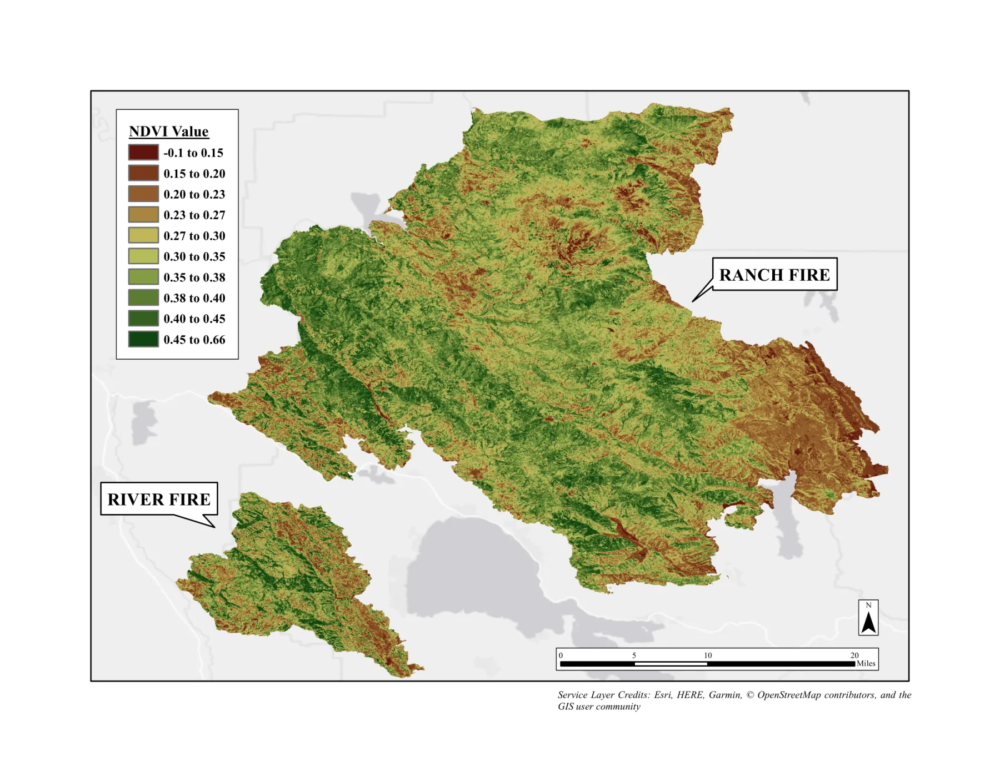
This map illustrates the Normalized Difference Vegetation Index (NDVI) values prior to the Complex's emergence (July 10, 2018). These values are derived from Landsat 8 imagery provided by USGS Earth Explorer.
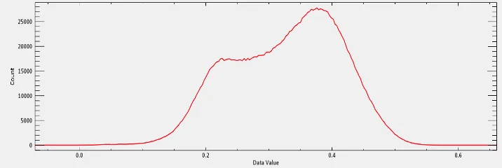
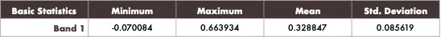
NDVI values measured before the Mendocino Fire Complex on July 10, 2018 were discovered to be of moderately high values on the NDVI scale, revealing relative levels of healthy vegetation. Aforementioned in the introduction portion of this study, is the influence of California’s Mediterranean climate. The lack of precipitation values in the year 2018, coupled with the intensified temperature values in the state’s dry summer season, will not allow for NDVI values to be extremely high to begin with. Comparing these averages with NDVI values associated with vegetation in tropical climates like Puerto Rico, for instance. During this satellite image, the mean NDVI value was reported at 0.3288; the minimum was reported at -0.0700; and the maximum was reported 0.6639.
NDVI Analysis - After Fire
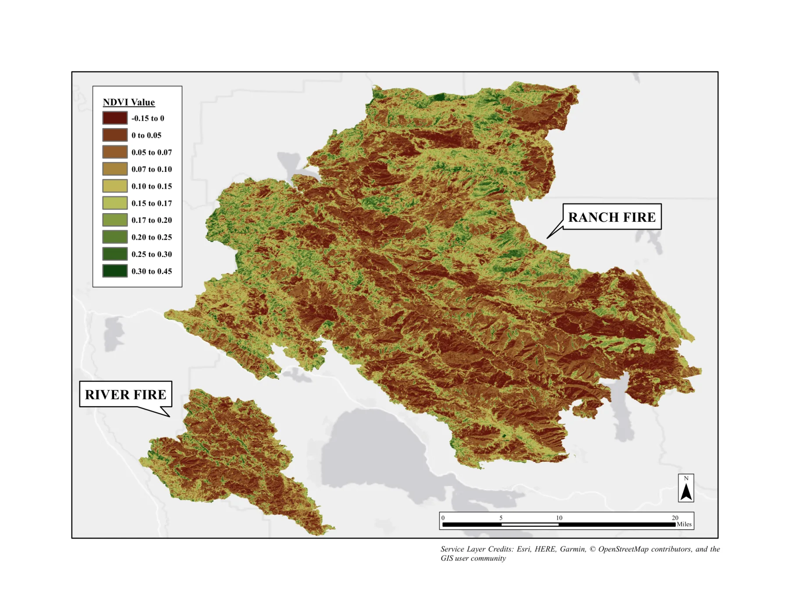
This map illustrates the Normalized Difference Vegetation Index (NDVI) values after the Mendocino Complex (October 30, 2018). These values are derived from Landsat 8 imagery provided by USGS Earth Explorer.
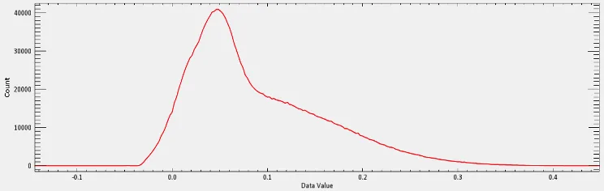
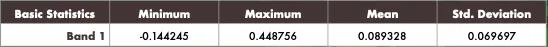
The impact of the Mendocino Fire Complex on NDVI values was a complete vegetation loss across areas directly impacted by the Complex, especially in highly vegetated areas like the Mendocino National Forest. During the date of this satellite image post-fire, October 11th, the mean NDVI value was reported at 0.0893; the minimum NDVI value was reported at -0.1442; and the maximum NDVI value was reported at 0.4487.
NDVI Analysis - Total Vegetation Change
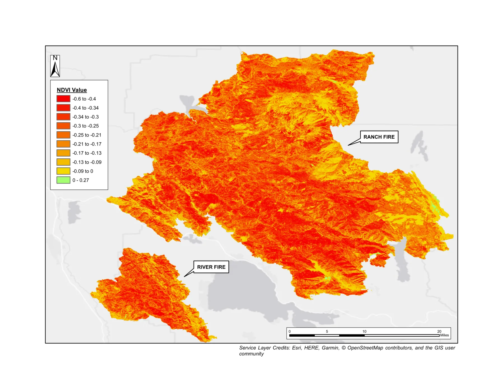
This map illustrates the calculated change in Normalized Difference Vegetation Index (NDVI) values across the burned areas after the Mendocino Complex’s dissipation. It was calculated by finding the difference of post-fire NDVI values and pre-fire NDVI values. These values are derived from Landsat 8 imagery provided by USGS Earth Explorer.
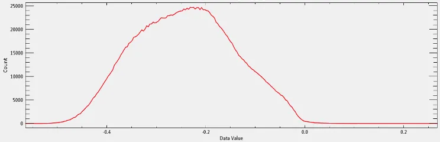
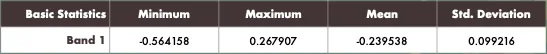
The total impact of the Mendocino Fire Complex on NDVI values was a general decrease in vegetation levels across the board. The total change in the mean NDVI value was reported at -0.2395; the minimum change in total NDVI value was reported at -0.5641; and the maximum change in total NDVI value was reported at 0.2679.
Differenced NBR Analysis
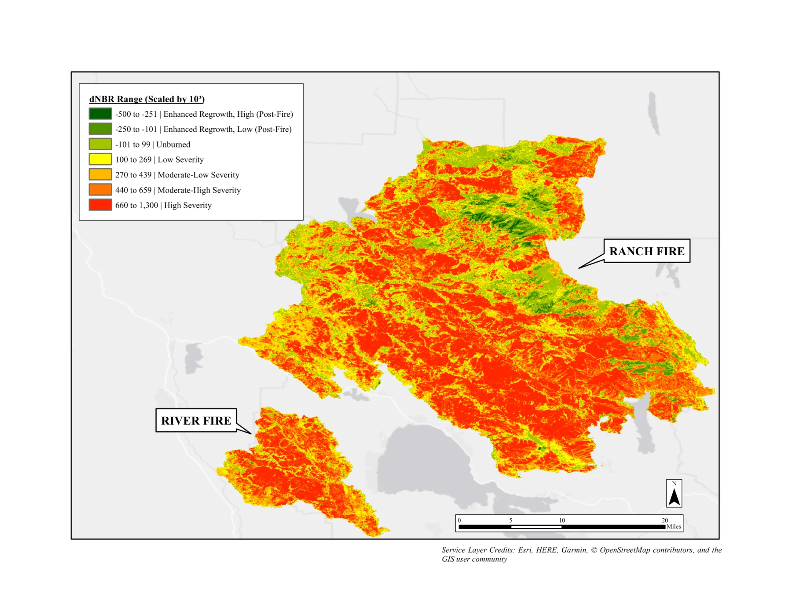
This map illustrates the Differenced Normalized Burn Ratio (dNBR) values after the Complex's emergence. The area is teeming with changes in NBR of all values, but it's apparent to the viewer that most values fall within the 'Moderate-Low Severity' to 'High Severity.' This map was produced through Google Earth Engine's UN-SPIDER application. The burn severity classification is provided by USGS.
Discussion:
The objective of this research was to unveil the changes in vegetation cover over the Mendocino National Forest and surrounding areas in Mendocino County, after the emergence of California’s largest wildfire in state history, the Mendocino Fire Complex (2018). Moreover, its goal was to analyze the difference in calculating vegetation cover change through the comparison of Normalized Difference Vegetation Index (NDVI) values and the spectral indices of Normalized Burn Ratio (NBR). Overall, this goal was succeeded as both variables experienced a drastic decrease in areas where vegetation intersected the breadth of the Complex’s expanse. These conclusions are consistent with previously hypothesized outcomes of a forest disturbance's influence on NDVI and NBR.
Pre-fire vegetation experiences high NIR reflectance and low SWIR reflectance, while post-fire vegetation experiences low NIR reflectance and a high SWIR response. The region’s overall high dNBR values illustrate an intense burning, with seldom areas experiencing negative values and the associated increase in vegetation regrowth. Seasonal variations were outside the scope of this research, due to the relatively small change in spectral signatures during California’s dry period (from July to August). As predicted, Mendocino County experienced high NDVI values prior to the Complex, and a substantial decrease in NDVI values after the Complex. NDVI values prior to the Complex on July 10th were moderately high, taking into account the effect of California’s Mediterranean climate. The lack of precipitation in the year 2018, coupled with intensified temperature values during the dry summer season, explain for the pre-complex mean NDVI value of 0.33, post-complex mean NDVI value of 0.08, and total change mean NDVI value of -0.24.
This research is imperative for understanding vegetation change as a result of fire disturbances in a Mediterranean climate. With an almost guarantee of increased global carbon dioxide levels (and ergo global temperature values) from global warming, the emergence of fire disturbances like wildfires will ensue and increase. Because of this realization, the intensified studying of NDVI changes to such phenomena will ensure more careful monitoring towards vegetation in the years to come. Likewise, the development of an enhanced burn severity index other than NBR may be needed. In essence, this newly developed burn severity index would study the possibility of ambiguities in reflectance data during the data preprocessing stage of remote sensing techniques.
Acknowledgements:
I would like to personally thank Dr. Nick Burkhart for being my advisor during the curation of my independent research. I would also like to thank Geoffrey Fricker for sharing his knowledge of advance remote sensing techniques, and his continued interest in my academic and professional fields related to GIS.
Sources: GeoMac, USGS Earth Explorer, USGS UN-SPIDER, USDA National Forest, US Census Bureau 2018 TIGER/ Line, the California Natural Resources Agency National Hydrology Dataset (NHD).